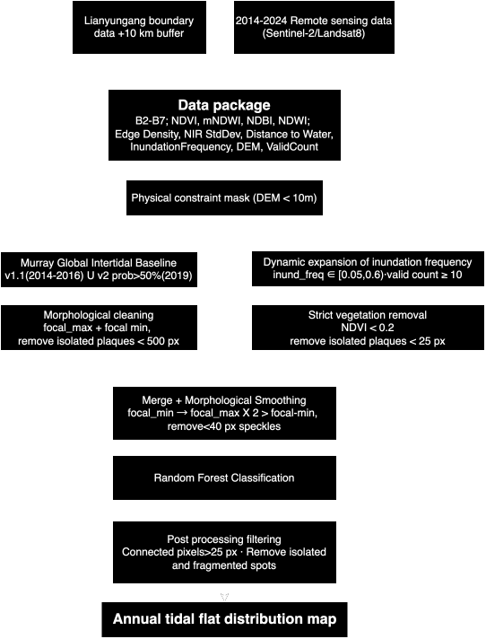
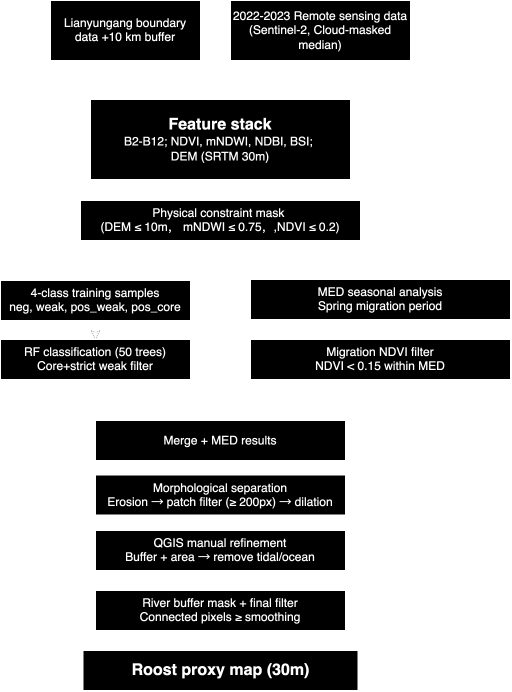

Lianyungang Blue Corridor: Estuarine Habitat Dynamics for Migratory Birds
Project Summary
Fill in the sections below to provide a brief summary of your project. Each section should have no more than 100 words. Do not edit any of the headings.
Problem Statement
Lianyungang’s coastal wetlands sit on the East Asian–Australasian Flyway, providing critical stopover habitat for migratory shorebirds including globally threatened species.
Despite China’s post-2018 reclamation moratorium and the Blue Bay remediation programme, coastal development continues to encroach on intertidal flats.
Lianyungang was removed from the Yellow Sea World Heritage nomination shortlist in 2022 following contested environmental impact assessments. Ongoing litigation between conservation NGOs and development authorities highlights a persistent gap: the lack of spatially explicit, reproducible tools to evaluate where development pressures conflict with shorebird habitat.
This application provides a low-cost, satellite-based proxy tool for rapid broad-scale identification of potential habitat loss and development conflict zones, helping prioritise areas that warrant further detailed field assessment.
End User
Who are you building this application for? How does it address a need this community has?
Coastal wetland managers and conservation planners within China’s natural resources agencies and environmental NGOs.
Identify priority areas for protection or restoration across large stretches of coastline before committing to expensive field surveys.
Enables users to rapidly narrow down candidate sites where tidal flat loss, roosting habitat degradation, or coastal squeeze risk is highest, directing limited survey resources more efficiently.
Data
What data are you using?
For Tidal Flat Identification：
Murray Global Intertidal Dataset, early (up to 2016) + 2019 SRTM DEM (USGS/SRTMGL1_003), elevation masking, coastal lowlands (≤10m) Sentinel-2 and Landsat imagery, Surface Reflectance NDWI, NDVI, water frequency (* use word: inundation frequency) Sample: tidal/nontidal for Random forest
For Potential Roost Identification：
OSM landuse tag + polygon (positive/weak positive/negative/medium samples: four-class roosting site labels), for Random forest
Spectrally identified permanent water pixels (MNDWI > 0.75) sampled: negative training data
OSM waterway network (line+buffer), mask permanent water
| CATEGORY | DATASET | DESCRIPTION | SOURCE |
|---|---|---|---|
| GEE | Sentinel-2 | Used to extract band data from 2018-2024 and calculate screening criteria: B2-B7; NDVI/NDWI/mNDWI; Edge Density/NIR StdDev/Distance to Water/InundationFrequency/DEM/ValidCount | Link |
| Landsat 7/8 | Used to extract band data from 2014-2017 and calculate screening criteria: B2-B7; NDVI/NDWI/mNDWI; Edge Density/NIR StdDev/Distance to Water/InundationFrequency/DEM/ValidCount | Link | |
| Murray Global Intertidal | v1.1 (2014–2016) ∪ v2 prob >50% (2019); historical tidal flat baseline | Link | |
| SRTM DEM | Used to screen low-lying areas below 10m along the coast | Link | |
| Administrative Boundary | Lianyungang boundary + 10 km coastal buffer | Link | |
| Others | OSM Land Use | Land use polygons → four habitat sample types (positive / weak positive / medium / negative) | Link |
| OSM Waterway | Waterway lines + buffer → permanent water body mask | Link |
Methodology
Part 1: Pre preprocessing
Tidal flat:
(1)Multi-temporal Sentinel-2 imagery: derive spectral indices, per-pixel inundation frequency + low-vegetation (NDVI < 0.2)
(2)Murray: per-pixel inundation frequency + vegetation masking + patch filtering
(3)Combination: (1)+(2) as baseline, RF. 15-feature stack including spectral bands, inundation frequency, elevation, water proximity, edge density, and NIR texture

Potential root:
(1)Candidate mask: low-elevation (≤10 m), non-permanent-water (MNDWI ≤ 0.75), and low-vegetation (NDVI ≤ 0.2) pixels
(2)Four-class ordinal Random Forest:
Migration-season (March–May) NDVI composites for neutral sample (medium) selection (capture seasonally bare ground)
+filtering by area (≥8 ha)
Clean. by QGIS + OSM waterline buffer mask + fill holes + smooth 
Part 2: online application
Exported tidal flat and roost layers + distance buffer + area calculation
within distance bands + prioritized tidal flat/potential roost based on:
Part 2: online application Tidal flat change was quantified by comparing binary raster outputs across 2014–2015, 2019, and 2024. Pixel-based area statistics and raster subtraction were used to derive total area change, percentage change, and spatial gain/loss patterns. Exported tidal flat and roost layers + distance buffer + area calculation within distance bands + prioritized tidal flat/potential roost based on: area panel user interface
*placeholder for Edited and improvearea panel
user interface
Interface
How does your application’s interface work to address the needs of your end user?
The Application
Replace the link below with the link to your application.
How it Works
Use this section to explain how your application works using code blocks and text explanations (no more than 500 words excluding code):
Pre-processing Part:
1. Tidal
1.1 Data Preparation and Precomputations
In this project, our study area covers Lianyungang and a 10 km coastal buffer zone. We first preprocess multi-source remote sensing data from 2014 to 2024 to generate annual feature stacks for tidal flat mapping.
// Data Preparation and Precomputations
// Set research location and basic elements
Map.setCenter(119.22, 34.60, 10);
var roi = ee.FeatureCollection("projects/my-project-20260224-488410/assets/LYG_Final");
var finalRegion2024 = roi.geometry();
Map.addLayer(roi, {color: 'red'}, "Study Area");
var ELEV_MAX = 10; // Eliminate high-altitude interference
var NDVI_VEG = 0.4; // Define high-density vegetation
var MIN_PATCH = 100; // Reducing this to 100, 500 may filter out small sandbars if it is too large
var ZONE_UPPER = 0.3; // Boundary of high tide beach
var ZONE_LOWER = 0.6; // Boundary of low tide beach
var dem = ee.Image('USGS/SRTMGL1_003').clip(roi);
var lowLand = dem.lte(ELEV_MAX);
// Processing Sentinel-2 data
// Prepare 2018-2024 Sentinel-2 Loop
// 1. Define Sentinel-2 specific bit mask cloud removal function
function maskS2clouds(image) {
var qa = image.select('QA60');
var cloudBitMask = 1 << 10;
var cirrusBitMask = 1 << 11;
var mask = qa.bitwiseAnd(cloudBitMask).eq(0)
.and(qa.bitwiseAnd(cirrusBitMask).eq(0));
return image.updateMask(mask).divide(10000)
.copyProperties(image, ["system:time_start", "CLOUDY_PIXEL_PERCENTAGE"]);
}
// 2. Set the function for processing Sentinel-2 data
var processYearlyData = function(year) {
var startDate = ee.Date.fromYMD(year, 1, 1);
var endDate = ee.Date.fromYMD(year, 12, 31);
var col = ee.ImageCollection("COPERNICUS/S2_SR_HARMONIZED")
.filterBounds(finalRegion2024)
.filterDate(startDate, endDate)
.filter(ee.Filter.lt('CLOUDY_PIXEL_PERCENTAGE', 20))
.map(maskS2clouds)
var imgCount = col.size();
// 2.1 Core dynamic features
var waterCol = col.map(function(img) {
return img.normalizedDifference(['B3', 'B11']).gt(0).rename('water_mask');
});
var inundationFrequency = waterCol.reduce(ee.Reducer.mean()).rename('inund_freq');
var validCount = waterCol.count().rename('valid_count');
// 2.2 Generate a median composite map for that year
var median = col.median()
.clip(finalRegion2024)
.set('year', year)
.set('image_count', imgCount)
.set('info_list', col.reduceColumns(ee.Reducer.toList(2), ['system:index', 'CLOUDY_PIXEL_PERCENTAGE']).get('list'));
// 2.3 Spatial texture features
var mndwi_rf = median.normalizedDifference(['B3', 'B11']);
// A. Edge Density
var edge = ee.Algorithms.CannyEdgeDetector({
image: mndwi_rf, threshold: 0.3, sigma: 1
});
var edgeDensity = edge.reduceNeighborhood({
reducer: ee.Reducer.mean(),
kernel: ee.Kernel.circle(3)
}).rename('edge_density');
// B. NIR StdDev
var localStdDev = median.select('B8').reduceNeighborhood({
reducer: ee.Reducer.stdDev(),
kernel: ee.Kernel.square(2)
}).rename('nir_stdDev');
// C. Distance to Water
var distToWater = mndwi_rf.gt(0.2)
.fastDistanceTransform(30).sqrt().rename('dist_water');
// D. DEM
var elevation = dem.rename('elevation');
// E. NDWI, mNDWI, NDVI, NDBI
var ndwi = median.normalizedDifference(['B3', 'B8']).rename('NDWI');
var mndwi = mndwi_rf.rename('mNDWI');
var ndvi = median.normalizedDifference(['B8', 'B4']).rename('NDVI');
var ndbi = median.normalizedDifference(['B11', 'B8']).rename('NDBI');
return median.addBands([
ndwi, mndwi, ndvi, ndbi,
inundationFrequency, validCount, edgeDensity, localStdDev, distToWater, elevation
]).select(
['B2', 'B3', 'B4', 'B8', 'B11', 'B12', 'NDVI', 'mNDWI', 'NDWI', 'NDBI', 'inund_freq', 'valid_count', 'edge_density', 'nir_stdDev', 'dist_water', 'elevation'],
['B2', 'B3', 'B4', 'B5', 'B6', 'B7', 'NDVI', 'mNDWI', 'NDWI', 'NDBI', 'inund_freq', 'valid_count', 'edge_density', 'nir_stdDev', 'dist_water', 'elevation']
).set('year', year);
};
// 3. Execute loop
var yearsList = [2018, 2019, 2020, 2021, 2022, 2023, 2024];
var yearlyList = ee.List(yearsList).map(function(y) { return processYearlyData(y); });
// 4. Return the results to ImageCollection
var finalTimeSeries = ee.ImageCollection.fromImages(yearlyList);
// Processing Landsat8 data
// Prepare 2014-2017 landsat8 Loop
// 1. Define Landsat8 specific bit mask cloud removal function
function maskL8clouds(image) {
var opticalBands = image.select('SR_B.').multiply(0.0000275).add(-0.2);
var qa = image.select('QA_PIXEL');
var cloudBitMask = (1 << 3);
var cloudShadowBitMask = (1 << 4);
var mask = qa.bitwiseAnd(cloudBitMask).eq(0)
.and(qa.bitwiseAnd(cloudShadowBitMask).eq(0));
return image.addBands(opticalBands, null, true)
.updateMask(mask)
.copyProperties(image, ["system:time_start"]);
}
// 2. Set the function for processing Landsat8 data
var processYearlyLandsat = function(year) {
var startDate = ee.Date.fromYMD(year, 1, 1);
var endDate = ee.Date.fromYMD(year, 12, 31);
var col = ee.ImageCollection("LANDSAT/LC08/C02/T1_L2")
.filterBounds(finalRegion2024)
.filterDate(startDate, endDate)
.filter(ee.Filter.lt('CLOUD_COVER', 20))
.map(maskL8clouds);
var imgCount = col.size();
// 2.1 Core dynamic features
var waterCol = col.map(function(img) {
return img.normalizedDifference(['SR_B3', 'SR_B6']).gt(0).rename('water_mask');
});
var inundationFrequency = waterCol.reduce(ee.Reducer.mean()).rename('inund_freq');
var validCount = waterCol.count().rename('valid_count');
// 2.2 Generate a median composite map for that year
// Resample first and then take median to ensure interpolation effect
var median = col.map(function(img){
return img.resample('bicubic');
}).median().clip(finalRegion2024);
// 2.3 Spatial texture features
var mndwi_rf = median.normalizedDifference(['SR_B3', 'SR_B6']);
// A. Edge Density
var edge = ee.Algorithms.CannyEdgeDetector({image: mndwi_rf, threshold: 0.3, sigma: 1});
var edgeDensity = edge.reduceNeighborhood({
reducer: ee.Reducer.mean(),
kernel: ee.Kernel.circle(3)
}).rename('edge_density');
// B. NIR StdDev
var localStdDev = median.select('SR_B5').reduceNeighborhood({
reducer: ee.Reducer.stdDev(),
kernel: ee.Kernel.square(2)
}).rename('nir_stdDev');
// C. Distance to Water
var distToWater = mndwi_rf.gt(0.2).fastDistanceTransform(30).sqrt().rename('dist_water');
// D. DEM
var elevation = dem.rename('elevation');
// E. NDWI, mNDWI, NDVI, NDBI
var ndvi = median.normalizedDifference(['SR_B5', 'SR_B4']).rename('NDVI');
var mndwi = mndwi_rf.rename('mNDWI');
var ndwi = median.normalizedDifference(['SR_B3', 'SR_B5']).rename('NDWI');
var ndbi = median.normalizedDifference(['SR_B6', 'SR_B5']).rename('NDBI');
return median.addBands([
ndvi, mndwi, ndwi, ndbi,
inundationFrequency, validCount, edgeDensity, localStdDev, distToWater, elevation
]).select(
['SR_B2', 'SR_B3', 'SR_B4', 'SR_B5', 'SR_B6', 'SR_B7', 'NDVI', 'mNDWI', 'NDWI', 'NDBI', 'inund_freq', 'valid_count', 'edge_density', 'nir_stdDev', 'dist_water', 'elevation'],
['B2', 'B3', 'B4', 'B5', 'B6', 'B7', 'NDVI', 'mNDWI', 'NDWI', 'NDBI', 'inund_freq', 'valid_count', 'edge_density', 'nir_stdDev', 'dist_water', 'elevation']
)
.set('year', year)
.set('image_count', imgCount)
.set('source', 'Landsat 8 (10m Bicubic)');
};
// 3. Execute loop
var l8Years = [2014, 2015, 2017];
var l8List = ee.List(l8Years).map(function(y) { return processYearlyLandsat(y); });
var l8TimeSeries = ee.ImageCollection.fromImages(l8List);
//Special process --- 2016 Landsat7+Landsat8
//After using Landsat-8's composite image for cloud removal for the first time, there were holes
//so it was decided to use Landsat-7 data for completion
// 1. Define Landsat7 specific bit mask cloud removal function
function maskL7clouds(image) {
var opticalBands = image.select('SR_B.').multiply(0.0000275).add(-0.2);
var qa = image.select('QA_PIXEL');
var cloudBitMask = (1 << 3);
var cloudShadowBitMask = (1 << 4);
var mask = qa.bitwiseAnd(cloudBitMask).eq(0)
.and(qa.bitwiseAnd(cloudShadowBitMask).eq(0));
return image.addBands(opticalBands, null, true)
.updateMask(mask)
.select(
['SR_B1', 'SR_B2', 'SR_B3', 'SR_B4', 'SR_B5', 'SR_B7'],
['B2', 'B3', 'B4', 'B5', 'B6', 'B7']
)
.copyProperties(image, ["system:time_start"]);
}
// 2. Set the function for processing Landsat7+8 data
var process2016Fusion = function() {
var year = 2016;
var startDate = '2016-01-01';
var endDate = '2016-12-31';
// 2.1 Get L8 collection
var l8ColRaw = ee.ImageCollection("LANDSAT/LC08/C02/T1_L2")
.filterBounds(finalRegion2024)
.filterDate(startDate, endDate)
.filter(ee.Filter.lt('CLOUD_COVER', 20))
.map(maskL8clouds); // The MaskL8clouds here must ensure that resamples are not done internally
// 2.2 Get L7 collection
var l7ColRaw = ee.ImageCollection("LANDSAT/LE07/C02/T1_L2")
.filterBounds(finalRegion2024)
.filterDate(startDate, endDate)
.filter(ee.Filter.lt('CLOUD_COVER', 40))
.map(maskL7clouds);
// 2.3 Cross set submergence frequency calculation
var l8Water = l8ColRaw.map(function(img){
return img.normalizedDifference(['SR_B3', 'SR_B6']).gt(0).rename('w');
});
var l7Water = l7ColRaw.map(function(img){
return img.select('B3','B6').normalizedDifference(['B3', 'B6']).gt(0).rename('w');
});
var combinedWater = l8Water.merge(l7Water);
var inundationFrequency = combinedWater.reduce(ee.Reducer.mean()).rename('inund_freq');
var validCount = combinedWater.count().rename('valid_count');
// 2.4 First, interpolate and align to regenerate the base image
// L8 base image processing
var l8Median = l8ColRaw.map(function(img) {
return img.resample('bicubic').select(
['SR_B2', 'SR_B3', 'SR_B4', 'SR_B5', 'SR_B6', 'SR_B7'],
['B2', 'B3', 'B4', 'B5', 'B6', 'B7']
);
}).median();
// L7 base image processing
var l7Median = l7ColRaw.map(function(img) {
return img.resample('bicubic');
}).median();
// Fusion: L8 as the main component, L7 for hole filling
var fusedImage = l8Median.unmask(l7Median)
.clip(finalRegion2024);
// 2.5 Spatial texture features
var mndwi_rf = fusedImage.normalizedDifference(['B3', 'B6']);
// A. Edge Density
var edge = ee.Algorithms.CannyEdgeDetector({image: mndwi_rf, threshold: 0.3, sigma: 1});
var edgeDensity = edge.reduceNeighborhood({
reducer: ee.Reducer.mean(),
kernel: ee.Kernel.circle(3)
}).rename('edge_density');
// B. NIR StdDev
var localStdDev = fusedImage.select('B5').reduceNeighborhood({
reducer: ee.Reducer.stdDev(),
kernel: ee.Kernel.square(2)
}).rename('nir_stdDev');
// C. Distance to Water
var distToWater = mndwi_rf.gt(0.2).fastDistanceTransform(30).sqrt().rename('dist_water');
// D. DEM
var elevation = dem.rename('elevation');
// E. NDWI, mNDWI, NDVI, NDBI
var ndvi = fusedImage.normalizedDifference(['B5', 'B4']).rename('NDVI');
var mndwi = mndwi_rf.rename('mNDWI');
var ndwi = fusedImage.normalizedDifference(['B3', 'B5']).rename('NDWI');
var ndbi = fusedImage.normalizedDifference(['B6', 'B5']).rename('NDBI');
return fusedImage.addBands([
ndvi, mndwi, ndwi, ndbi,
inundationFrequency, validCount, edgeDensity, localStdDev, distToWater, elevation
]).select(
['B2', 'B3', 'B4', 'B5', 'B6', 'B7', 'NDVI', 'mNDWI', 'NDWI', 'NDBI', 'inund_freq', 'valid_count', 'edge_density', 'nir_stdDev', 'dist_water', 'elevation']
).set('year', 2016).set('source', 'L8-Primary, L7-Filler_10m');
};
var composite2016 = process2016Fusion();
// Data Fusion: Merge S2, L8, 2016 into a Collection
// 1. Convert 2016 fused images to Collection format
var fusion2016Col = ee.ImageCollection([composite2016]);
// 2. Merge all datasets
var fullDataPackage = finalTimeSeries
.merge(l8TimeSeries)
.merge(fusion2016Col)
.sort('year');
// 3. Batch display (2014-2024 one click preview)
fullDataPackage.aggregate_array('year').evaluate(function(years) {
years.forEach(function(year) {
var img = fullDataPackage.filter(ee.Filter.eq('year', year)).first();
Map.addLayer(img, {bands: ['B4', 'B3', 'B2'], min: 0, max: 0.3}, 'Final_' + year, false);
});
});
// 4. Output package
var exportBands = [
'B2', 'B3', 'B4', 'B5', 'B6', 'B7',
'NDVI', 'mNDWI', 'NDWI', 'NDBI',
'inund_freq', 'valid_count', 'edge_density', 'nir_stdDev', 'dist_water', 'elevation'
];
fullDataPackage.aggregate_array('year').evaluate(function(years) {
years.forEach(function(year) {
var imgToExport = fullDataPackage.filter(ee.Filter.eq('year', year)).first();
var finalImg = imgToExport.select(exportBands).float();
Export.image.toAsset({
image: finalImg,
description: 'LYG_15_features_' + year,
assetId: 'projects/my-project-20260224-488410/assets/LYG_TimeSeries_Stacks_1/LYG_Stack_' + year,
region: finalRegion2024,
scale: 10,
maxPixels: 1e13,
crs: 'EPSG:4326',
});
});
});We then use the Murray Global Intertidal Dataset (v1.1 and v2) as a spatial baseline and refine it through elevation masking and morphological cleaning. Based on this, we dynamically expand candidate tidal flat areas by analysing pixel-wise inundation frequency, and apply a strict NDVI threshold to remove vegetated regions (NDVI < 0.2).
Finally, we train a random forest classifier that integrates Canny edge density and near-infrared texture features to distinguish natural tidal flats from aquaculture ponds.
// Tidal Flat Identification - Unified Pipeline
// Applicable to all years 2014-2024 (Asset-based)
// Only change: YEAR, ASSET_PATH, and sample collections
// 1. Parameters - modify these for each year
// For 2014-2017 (Landsat 8): change ASSET_PATH and use _early samples (Step 6)
// For 2018-2024 (Sentinel-2): change ASSET_PATH and use standard samples (Step 6)
var YEAR = 2014;
var ELEV_MAX = 10;
var NDVI_VEG = 0.4;
var MIN_PATCH = 500;
var studyArea = ee.FeatureCollection(
"projects/my-project-20260224-488410/assets/LYG_Final"
);
var ASSET_PATH = "projects/my-project-20260224-488410/assets/LYG_TimeSeries_Stacks_1/LYG_Stack_" + YEAR;
Map.setCenter(119.22, 34.60, 10);
Map.centerObject(studyArea, 11);
// 2. Load pre-processed feature package and build feature stack
// All sensor differences resolved at data package generation stage
var img = ee.Image(ASSET_PATH).float();
var inundFreqRaw = img.select('inund_freq');
var maxNDVI = img.select('NDVI');
var featureStack = img.select([
'B2','B3','B4','B5','B6','B7',
'NDVI','mNDWI','NDWI',
'inund_freq',
'edge_density',
'nir_stdDev',
'dist_water',
'elevation'
]).float();
// 3. Physical constraints: DEM and vegetation masks
var dem = ee.Image('USGS/SRTMGL1_003').clip(studyArea);
var lowLand = dem.lte(ELEV_MAX);
var denseVeg = maxNDVI.gt(NDVI_VEG);
var notDenseVeg = denseVeg.not().or(maxNDVI.unmask(0).not());
// 4. Load Murray Baseline
// Union of v1 (2014-2016 classification) and v2 (2019 probability >50%)
var murrayV1 = ee.ImageCollection('UQ/murray/Intertidal/v1_1/global_intertidal')
.filterDate('2014-01-01', '2017-01-01')
.first().select('classification').clip(studyArea);
var murrayV2 = ee.Image('JCU/Murray/GIC/global_tidal_wetland_change/2019');
var murrayEnd = murrayV2.select('twprobabilityEnd').gt(50).clip(studyArea);
var murrayUnion = murrayV1.or(murrayEnd).updateMask(lowLand);
// 5. Murray baseline: morphological cleaning and small patch removal (MIN_PATCH=500px)
// focal_max then focal_min fills internal voids and restores boundary
// Removes isolated Murray patches smaller than 500 pixels
var tidalFlatRaw = murrayUnion.updateMask(lowLand).clip(studyArea);
var k = ee.Kernel.circle({radius: 1, units: 'pixels'});
var cleaned = tidalFlatRaw
.focal_max({kernel: k, iterations: 1})
.focal_min({kernel: k, iterations: 1});
var connMurray = cleaned.selfMask()
.connectedPixelCount({maxSize: MIN_PATCH + 1, eightConnected: true});
var tidalFlatClean = cleaned.updateMask(connMurray.gte(MIN_PATCH));
// 6. Dynamic extension: capture tidal flats outside Murray baseline
// inund_freq threshold [0.05, 0.6): excludes permanent water and dry land
// validCount proxy: inundFreqRaw.mask() used as valid-observation filter
// (validCount not stored in package; mask() presence indicates valid data)
// NDVI < 0.2: strict vegetation exclusion to prevent cropland contamination
// Restricted to areas outside Murray baseline boundary
var validCount = img.select('valid_count');
var freqValid = inundFreqRaw
.updateMask(lowLand)
.updateMask(validCount.gte(10));
var freqDetected = freqValid.gte(0.05).and(freqValid.lt(0.6));
var strictVeg = maxNDVI.lt(0.2);
var freqExtension = freqDetected
.and(murrayUnion.unmask(0).not())
.and(strictVeg)
.updateMask(lowLand)
.clip(studyArea);
// Remove isolated dynamic extension patches smaller than 25 pixels
var connExt = freqExtension.selfMask()
.connectedPixelCount({maxSize: 26, eightConnected: true});
freqExtension = freqExtension.updateMask(connExt.gte(25));
// 7. Merge baseline and extension, then morphological smoothing
// Erosion (focal_min) breaks false narrow connections between patches
// Dilation (focal_max x2) fills internal gaps and smooths boundaries
// Final erosion restores approximate original boundary extent
// Remove debris patches smaller than 40 pixels generated by smoothing
var mergedRaw = tidalFlatClean.unmask(0).or(freqExtension.unmask(0));
var k_clean = ee.Kernel.circle({radius: 2});
var mergedCleaned = mergedRaw
.focal_min({kernel: k_clean, iterations: 1})
.focal_max({kernel: k_clean, iterations: 1})
.focal_max({kernel: k_clean, iterations: 1})
.focal_min({kernel: k_clean, iterations: 1});
// Remove debris patches smaller than 40 pixels generated during smoothing
var mergedConn = mergedCleaned.selfMask()
.connectedPixelCount({maxSize: 41, eightConnected: true});
var mergedBeforeRF = mergedCleaned.updateMask(mergedConn.gte(40));
// 8. Random Forest Classification
// 2014-2017 (Landsat): use tidal_early / nontidal_early
// 2018-2024 (Sentinel-2): use tidal / nontidal
// Training on 70% of samples, scale=10 matches package resolution
// --- For 2014-2017: use these two lines ---
var tidalFC = ee.FeatureCollection("users/jianlingzhao3131/tidal_early")
.map(function(f){ return f.set('class', 1); });
var nonTidalFC = ee.FeatureCollection("users/jianlingzhao3131/nontidal_early")
.map(function(f){ return f.set('class', 0); });
// --- For 2018-2024: replace with these two lines ---
// var tidalFC = ee.FeatureCollection("users/jianlingzhao3131/nontidal")
// .map(function(f){ return f.set('class', 1); });
// var nonTidalFC = ee.FeatureCollection("users/jianlingzhao3131/tidal")
// .map(function(f){ return f.set('class', 0); });
var samples = tidalFC.merge(nonTidalFC).randomColumn();
var training = featureStack.sampleRegions({
collection: samples.filter(ee.Filter.lt('random', 0.7)),
properties: ['class'],
scale: 10,
tileScale: 4
});
var rf = ee.Classifier.smileRandomForest(100).train(training, 'class');
var rfResult = featureStack.classify(rf);
// 9. Apply candidate mask to RF result, then remove isolated patches
// mergedBeforeRF acts as spatial constraint: RF only runs within candidate zone
// rfResult.neq(0) keeps pixels classified as tidal flat (class=1)
// Final connectivity filter removes isolated patches smaller than 25 pixels
var finalTidalFlatRaw = mergedBeforeRF.updateMask(rfResult.neq(0));
// Remove isolated patches smaller than 25 connected pixels
var finalConnFilter = finalTidalFlatRaw.selfMask()
.connectedPixelCount({maxSize: 26, eightConnected: true});
var finalTidalFlat = finalTidalFlatRaw.updateMask(finalConnFilter.gte(25));
// 10. Visualization
Map.addLayer(
img.select(['B4','B3','B2']),
{min: 0, max: 0.3},
YEAR + ' True Color Base Map',
true
);
Map.addLayer(
mergedBeforeRF.selfMask(),
{palette: ['blue'], opacity: 0.6},
YEAR + ' Candidate Mask (Before RF)',
false
);
Map.addLayer(
finalTidalFlat.selfMask(),
{palette: ['#E53935'], opacity: 0.8},
YEAR + ' Final Tidal Flat',
true
);2. Roost
1.Collect sample. PERMANENT WATER + OSM pos_core = [“aquaculture”, “salt_pond”, “basin”], pos_weak = [“brownfield”] neg_types = [“residential”, “industrial”, “commercial”, “retail”,“construction”, “railway”, “education”, “governmental”,“military”, “garages”, “cemetery”, “landfill”] med_types = [“’farmland”, “grass”, “paddy”]
2.A candidate mask, permanent water (MNDWI > 0.75), high vegetation (NDVI > 0.2), and elevated terrain (>10 m)
3.Random Forest (50 trees)
4.migration-season composite (March–May) capture seasonally bare ground at NDVI < 0.15 (MED SAMPLE)
5.merged and undergo morphological segmentation. erosion breaks narrow dyke connections between adjacent ponds, area filtering retains sites ≥8 ha, and dilation with closing restores and generalises boundaries
All outputs are exported as raster assets for ingestion by the interactive application.
Online application Part:
analysis 1.Raster assets are loaded(selected year) 2.cleaned against JRC Global Surface Water (occurrence > 95%) to remove permanent water bodies 3.masked to eliminate spatial overlap 4.for conservation prioritisation: literature-derived thresholds (distance) + area statistics (km²) are computed to quantify the proportion of habitat falling within each accessibility tier. User interface: 5. Tidal flat area change and gain/loss mapping
Tidal flat change was analysed using classified raster outputs from three time periods: 2014–2015, 2019, and 2024. Each raster was converted into a binary mask, where tidal flat pixels were assigned a value of 1 and non-tidal pixels were assigned a value of 0.
Area was calculated by multiplying tidal flat pixels by pixel area and summing the result across the study area. Temporal change was calculated by subtracting earlier raster layers from later ones. In the change maps, positive values represent tidal flat gain, negative values represent tidal flat loss, and zero values represent no change.
A manually defined mask was applied to remove a small urban area where misclassification affected the visual change map. This mask was used only for visual refinement and did not alter the original area statistics.
You can include images:

and math: \[ \Large t = {\frac{\overline{x_1}-\overline{x_2}} {\sqrt{\frac{s^2_1}{n_1} + \frac{s^2_2}{n_2}}}} \]